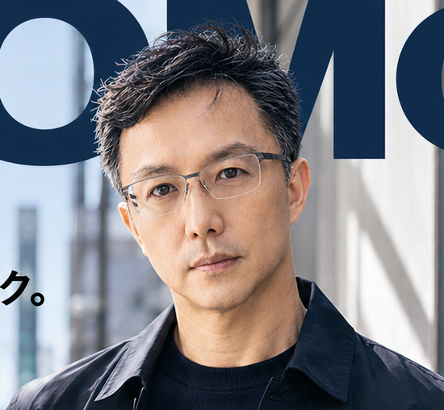
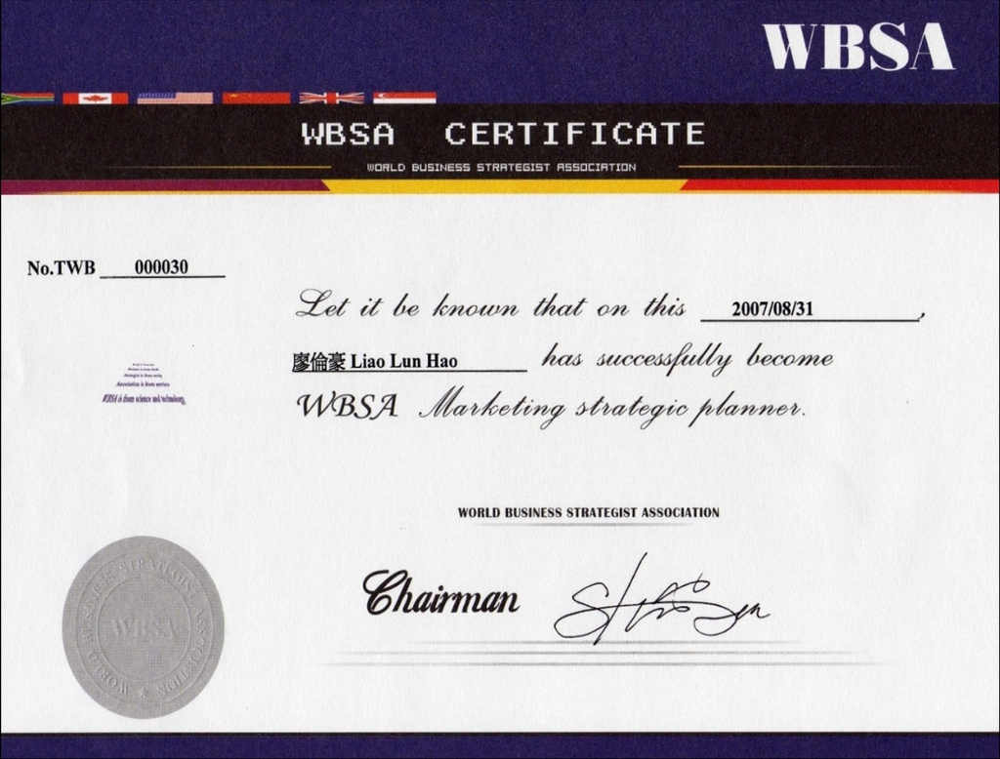
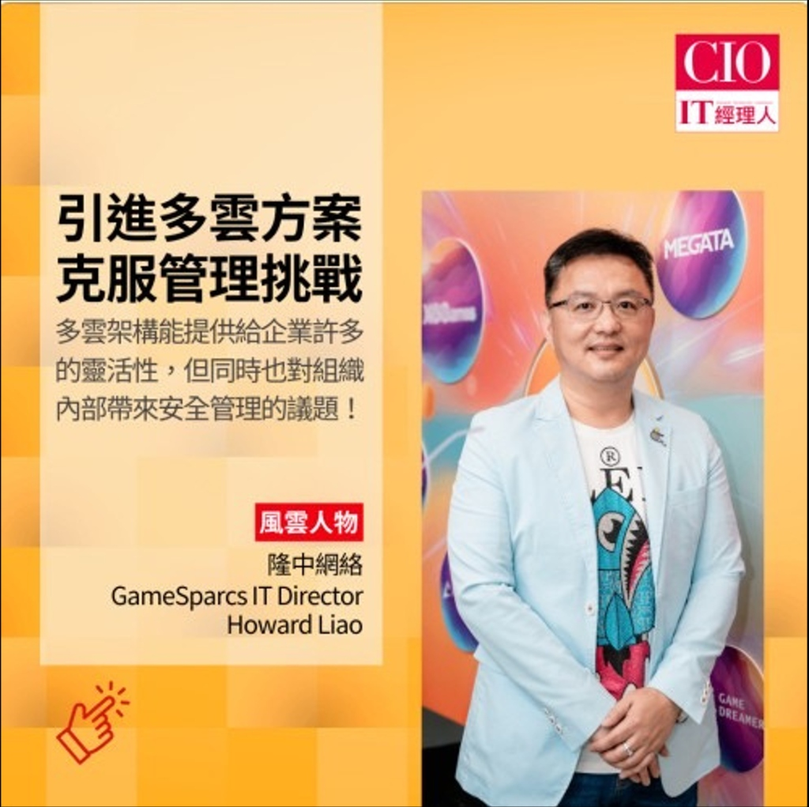
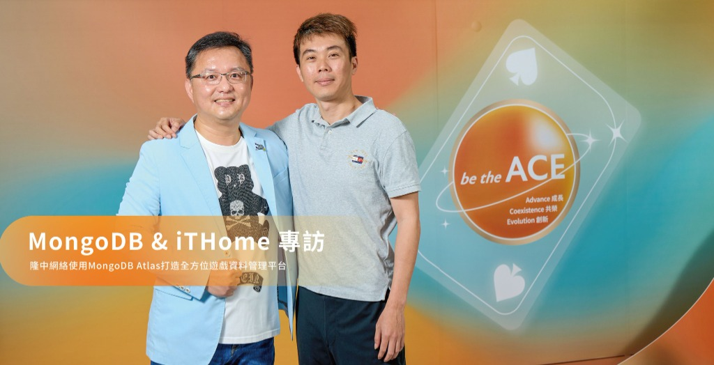
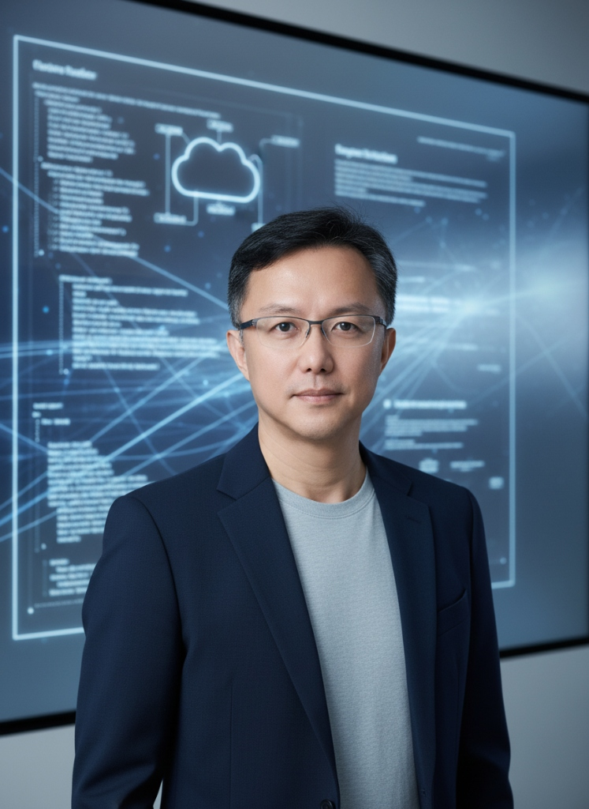

我是廖倫豪 (Howard Liao) 博士。具備 20+ 年跨產業（製造、遊戲、外商軟體）資歷與資訊科技管理博士背景的「數位轉型與資本配置操盤手 (Capital Allocator)」。專精多雲架構治理（FinOps）、資安合規（Zero Trust）、AI 治理與全球 IT 組織團隊賦能。善於以國際標準（ISO 27001 / 42001 / NIST）建構合規防護網，跨越技術本位，將科技投資轉化為具體提升企業 EBITDA 與現金流的戰略資產。

技術副總 (VP) / 資訊長 (CIO)
「算力與電力即是營收（Compute is Revenue），科技架構必須成為抵禦市場波動的裝甲。」
20+ 年技術管理與研發管理職涯，資訊科技管理博士學術底蘊與實戰歷練的深度融合。
「2026 年生成式 AI 與自主代理（Autonomous Agents）進入企業深水區。我主導建置對齊 ISO 42001 與 NIST AI RMF 的企業級 AI 管理系統（AIMS），劃定安全與風控紅線。高階領導者必須清楚知道『什麼不能做』，並敢於為風險簽名。」
在超過 20+ 年的技術管理與研發管理職涯中，我的核心使命始終是「以科技驅動業務，以治理保障永續」。橫跨國際軟體外商、製造業與上市櫃線上遊戲產業，我帶領橫跨美、中、台、歐之百人 IT 團隊，以 OGSM 戰略對齊董事會目標，兼顧「技術創新」與「風險控管（Risk Management）」。
我專精混合雲架構解耦（Decoupling）、SAP Clean Core 戰略、Oracle EBS 跨國重塑，並落實以成本優化（降低 TCO）及持續營運（Business Continuity）為核心的科技決策。面對實體 AI 與數位雙生成為顯學，我全面推動 OT/IT 一體化與邊緣運算，將防禦延伸至端點；並升級具備「加密敏捷性」的零信任網絡架構（Zero Trust），確保跨國雲端平台與核心系統穩定維持 **99.9%** 以上高可用性。
身為具備博士學位（Ph.D.）的π型技術領袖，我將自身在密碼學與資訊隱寫領域的研究（包括發表於 **SCI 高階期刊**《Multimedia Tools and Applications》的著作）轉化為實際的資安治理根基。我不僅帶領研發團隊進行數位轉型，更重塑決策結構、明確劃定資訊安全與應用的紅線，讓科技投資切實反映於企業的毛利與核心競爭力中。
專精於混合雲架構治理（FinOps）、資安合規（Zero Trust）、AI 治理與全球 IT 組織團隊賦能。善於以國際標準（ISO 27001 / 42001 / NIST）建構合規防護網，將科技投資轉化為提升企業 EBITDA 與現金流的戰略資產。
在跨越兩岸與海外的全球運營環境中，我成功將 ERP 系統、資安防護與邊緣數據深度整合，推動零信任微隔離與 DevSecOps，確保全球跨國團隊的極致發揮與法規合規。
ISO 27001 導入與稽核實務、ISO 42001 (AIMS) 人工智慧管理系統導入實務 (精進中：CISSP / CISM)
PMP 國際專案管理師、ScrumMaster CEO、Agile Coach、ESG 永續管理師、WBSA 中華行銷企劃師
Oracle EBS Supply Chain / Manufacture 模組專業認證、BEA Administrator、IBM Rational (精進中：GCP Professional Cloud Architect)
企業變革領導力、雲端安全與 FinOps 財務營運優化、Zero Trust 與 DevSecOps 左移實戰、NIST AI RMF 企業級應用、SAP/Oracle ERP 現代化安全策略
橫跨國際軟體外商、智慧製造與上市櫃遊戲產業，以動態獵頭指標對齊的實戰成果。
背景與挑戰 (Situation)： 集團跨國營運擴張迅速，舊有單一雲端架構與傳統邊界防護面臨效能瓶頸及勒索軟體威脅，維運預算面臨失控瓶頸，需快速升級。
背景與挑戰 (Situation)： 全球發行之遊戲平台流量波動劇烈，單一雲成本過高且易遭 API 與 DDoS 惡意攻擊；研發團隊快速迭代易與資安合規政策產生摩擦，亟待流程再造。
主導將核心工作負載遷移至多雲環境下的 Google Kubernetes Engine (GKE)，並深度整合 MongoDB Atlas 全託管平台，導入 FinOps 預算標籤自動化配置。
創下 Zero Outage（零停機） 紀錄，基礎設施部署時間縮短 100%，遊戲載入速度提升兩倍，多雲持有成本下降 30%。
統籌並通過 ISO 27001 國際認證，將 SAST/DAST 安全掃描嵌入 CI/CD 流程，建立「資安冠軍 (Security Champions)」機制，協同防禦 WAF 與 DDoS 威脅。
資安事故年減 30%，正式上線前重大漏洞修補率達 85%，合規審查週期大幅縮短，維護百萬玩家隱私安全。
背景與挑戰 (Situation)： 傳統電子製造流程缺乏即時數據可視性，生產良率與設備維護成本面臨瓶頸，且面臨 IT 與 OT 網路邊界模糊、工控設備遭勒索軟體滲透之巨大營運中斷風險。
背景與挑戰 (Situation)： 跨國軟體專案數量激增，原有舊系統無法支撐多國據點協作與即時財務分析，且面臨 IPO 上市前嚴格的資訊內控合規查核壓力。
背景與挑戰 (Situation)： 集團面臨高度依賴紙本流程與嚴重的資訊孤島問題，業務快速擴張導致異質系統資料不一致，嚴重拖慢決策時效。
背景與挑戰 (Situation)： 作為全球知名軟體與 ALM 工具開發巨頭，研發流程跨越美亞，急需建立全球統一的軟體安全生命週期管理（ALM）標準以防範供應鏈安全風險。
背景與挑戰 (Situation)： 面對電信、金融等國家級關鍵基礎設施客戶，企業級關聯式資料庫（RDBMS）對於高可用性、災難備援 (DR) 與資料隱私存取稽核要求極高，容不得單點故障。
將多雲持有成本優化與資安威脅可觀測性進行單一平台整合
針對高併發流量，我在組織中強力導入 FinOps（雲端財務營運）制度。藉由建立嚴格的資源標籤標準（Tagging），結合 Cloud Load Balancing 智慧流量分配及 GKE Autoscaling 自適應縮減，將資安防禦與多雲資源調配徹底整合。
我主導並設計安全監控系統，融合 Prometheus、Graylog 與 Grafana，實現跨廠區 OT 設備與雲端數字平台的全視角可觀測性。遭受異常控制或惡意滲透威脅時，秒級內自動關聯資產 IP 進行阻斷，大幅縮短響應時間（MTTR）。
20+ 年跨國運營所奠定的 6 大核心技術與管理範疇，兼顧底層架構細節與高階商業決策。
操盤 GCP、AWS 與 Azure 跨雲整合。導入 FinOps 框架落實自動化配置與預算 Chargeback 制度，成功將整體雲端 TCO 降低 20% – 30%。
落實零信任架構（ZTA），將資安掃描（SAST/DAST）嵌入 CI/CD。輔導企業通過 ISO 27001 認證，降低 30% 安全漏洞修復成本與合規週期。
對齊 ISO 42001 精神導入 AI 治理（AIMS），運用 Agentic AI 自動化客服與內部營運，流程效率提升約 55%，並建立負責任的 AI 決策追蹤軌跡。
貫徹 SAP Clean Core 策略與 Oracle EBS 多國 Rollout；運用 MongoDB Atlas 全託管服務替代地端包袱，全球財務與供應鏈結帳效率提升 50% 以上。
建立 Prometheus/Grafana 監控體系，定義 SLI/SLO 服務水準指標。在高流量平台達成 99.9% 至 99.99% 高可用性與 Zero Outage 紀錄。
靈活運用 OGSM、TOGAF 企業架構框架與五力分析，將商業願景轉譯為清晰的 IT 執行路徑，以 ROI 驅動決策，並以商業語言向董事會報告。
扎實的資訊管理科學研究根基，是頂層資安與架構思維的起點。
主修領域： 雲端資安、AI 治理、軟體工程、資訊科技治理。
博士論文： 《整合系統的商業自助式入口網站植基於調適性服務導向架構資訊科技治理之研究》（實作 ITIL V3 服務營運規範與 SOA 架構）。
主修領域： Data Mining 資料探勘、資料治理、決策支援系統、軟體工程、現代密碼學。
歷史專案： 曾擔任衛生署台中醫院「醫療雲端-居家照護計劃」協同主持人。
共同作者：Ya-Fen Lin, Kuo-Feng Hwang, Chin-Ying Lin, Ching-Chiuan Lin, Hsien-Wei Yang, Lun-Hao Liao (廖倫豪)
共同作者：Kuo-Feng Hwang, Lun-Hao Liao (廖倫豪), and Lih-Chyau Wuu
💡 獵頭實務觀點 (Recruiter Translation)： 本研究屬於高階密碼學與資訊隱寫（Information Hiding）領域。此深厚學術功底直接奠定了本人在多雲零信任架構中，部署高強度資料隱私防線、防範惡意篡改與防止製造業 IP 智財權外洩的全球工程與安全防衛根基。
研究核心： 探討 WSN 無線感測網路中基於改良型加權質心之定位演算法（與梁錫卿教授共同發表）。
帶領團隊與 Google Cloud 深度合作完成**全面容器化 GKE 轉型與 MongoDB Atlas 全球數據佈署**，獲選為 Google Cloud 官方成功客戶案例，作為雲原生架構實踐典範。
受邀擔任 CIO Taiwan 價值學院（第十七屆）與 MongoDB.local Taipei 等國際論壇之專題主講人，向亞太區高階主管分享多雲架構、自動化部署與 API 安全實戰經驗。
現任/歷載擔任 財團法人康善基金會 董事兼資訊長，將企業級雲端科技與安全架構專長導入醫療健康公益領域，實踐企業級社會責任與永續精神。




解析我如何主導跨國架構重組、自動化監控與 AI 治理，並為企業節省鉅額成本。
解決混合雲地資產黑盒，實現全局可觀測性與秒級告警
集團混合雲與地端資產交錯，形成龐大的維運黑盒。維運團隊面臨嚴重的告警疲勞、找不到受駭設備、IP 資訊無法與實體資產自動關聯，導致重大威脅事件發生時故障修復時間 (MTTR) 過長。我作為專案總召，目標是在極低預算下建立一套透明、即時的安全聯防中樞。
「昂貴的商業產品並非唯一的資安解藥。深度的 API 整合思維與開源架構靈活調度，能徹底消除資產盲點，在預算中立下顯著提升企業的 Risk Management 整備度。」— Howard Liao Ph.D. 治理反思
解耦 ERP 客製化技術債，導入 LangGraph 與本地安全 AI 治理
集團多次併購累積了臃腫的 ERP 系統，多套異質客製化代碼導致系統升級困難且成本極高。同時，各事業群迫切希望引入 LLM 自動化內部營運流程，但面臨 Token 費用失控、 Prompt Injection 風險以及董事會對機敏數據外洩的極度擔憂。我必須在安全與創新間尋求突破。
「核心系統解耦與標準化是企業擁抱 AI 經濟的先決條件。透明的 AI 治理與負責任的決策追蹤軌跡能有效化解業務單位對新技術的安全疑慮，實現安全與創新的雙贏。」— Howard Liao Ph.D. 治理反思
針對高階 CIO / CTO 核心能力需求，以本人的可驗證實戰成果與數據精確對應
| 高階 CIO / CTO 能力需求 C-Suite Competency | 本人可驗證能力與實戰數據對應 Howard's Verified Deliverables |
|---|---|
| 戰略規劃與商業對齊 (Strategic Alignment) |
具備 20+ 年 IT 經驗，以 OGSM 將技術策略對齊集團毛利。主導跨國併購 IT 整併，精準掌控最高 $10M USD 預算，以 ROI 驅動決策。 |
| 雲端架構與成本治理 (Cloud FinOps) |
操盤跨 GCP/AWS/Azure 架構，主導 GKE 容器化專案與 MongoDB Atlas 平台，提升部署效率 100%，並透過資源最佳化使整體雲端成本下降 30%。 |
| 資安與合規治理 (Security & Compliance) |
導入 Zero Trust 框架與 DevSecOps，輔導企業通過 ISO 27001 認證。部署 WAF/DDoS 防護，使資安事故年減 30%，產品漏洞年減 85%。 |
| 創新與 AI 賦能 (AI & Innovation) |
對齊 ISO 42001 精神，建置企業級 AI 管理系統（AIMS）並推動 Agentic AI 自動化。推動實體 AI (AIoT) 於智慧製造，降低 TCO 達 25%。 |
| 業務連續性保障 (Business Continuity & SRE) |
落實 SRE 監控體系與災備演練，於高流量遊戲平台與核心 ERP 系統達成 99.9% 至 99.99% 之高可用性，實現零停機 (Zero Outage)。 |
| 全球 IT 組織與跨國領導 (Global Leadership) |
具備美、中、台、歐洲等多國跨區協作與大型跨國 IT 團隊管理經驗。重組 Scrum 敏捷團隊，縮短重大故障 MTTR 達 50%，建立當責開發文化。 |
| 數據治理與核心系統 (Data & ERP Integration) |
熟稔 SAP Clean Core 策略與 Oracle EBS 跨國整合，導入 MongoDB Atlas 全託管數據服務，確保集團海量資料處理之正確性與實時性，結帳報表效率提升 50%。 |
專為董事會成員與高階獵頭設計，展示具備科學深度的科技治理大局觀
💡 橫向對照廖博士 20+ 年職涯三大領域的核心挑戰、風控本質與實戰落地手段：
| 產業維度 Industry Scope | 流量與架構挑戰 Tech Challenges | 核心數位風險 Digital Risks | 關鍵營運指標 Business KPIs | 廖博士實戰落地方案 Deliverables |
|---|---|---|---|---|
| 線上遊戲與發行平台 (GameSparcs / 盛欣) |
巨量瞬時併發洪峰 全球玩家跨區低延遲需求。 |
勒索軟體、DDoS 攻擊、API 漏洞、遊戲機密與玩家隱私外洩。 | Zero Outage (零停機) 部署時間縮短 100% 雲端成本降低 30%。 |
導入 GKE 容器化自動調度 與 MongoDB Atlas 平台；佈署零信任網路（ZTA）與 ISO 27001。 |
| 智慧製造與供應鏈 (泓晏科技 / 光男集團) |
OT/IT 異質數據一體化 地端舊有 ERP 包袱與邊緣端海量感測器串接。 |
產線意外停機損失、供應鏈斷鏈風險。 | 提升產線稼動率與良率 降低整體擁有成本（TCO）達 25%。 |
佈署 Edge Computing 架構即時採集數據；推動 SAP Clean Core 與 Oracle EBS 流程標準化。 |
| 國際頂尖軟體外商 (Borland / Sybase) |
全球化軟體生命週期 核心關聯式資料庫高可用性設計。 |
軟體供應鏈安全漏洞、異地災備未落實導致的單點故障。 | 核心資料庫可用性達 99.99% 研發與測試交付速度提升 35%。 |
導入 IBM Rational 與 ALM 工具，標準化供應鏈安全；建立嚴謹的 Disaster Recovery 災備防線。 |
戰略思維： 雲端算力與電力即是碳排。傳統的虛擬機常置於低效運作狀態，這不只是財務上的浪費，更是企業 ESG 評級的減分項。
落地實踐： 透過推動 GKE 容器化與彈性自動擴展機制（Autoscaling），實現資源的最佳化配置。在降低 30% 雲端預算的同時，直接等比削減資料中心的能耗與碳足跡，將 FinOps（財務營運） 轉化為企業落實 ESG 綠色轉型 (Scope 3 減碳) 的實質數據證明。
資安合規 (ISO 27001 / NIST CSF)： 拒絕「為了拿證照而合規」的表面工夫。將安全掃描（SAST/DAST）完全內嵌至 DevOps 流程（升級為 DevSecOps），確保代碼從地端到雲端的每一步都具備 *Security by Design* 的當責精神，以此防範新世代的供應鏈與瀏覽器配置漏洞。
AI 倫理與治理 (ISO 42001 / NIST AI RMF)： 2026 年自主代理與生成式 AI 全面落地企業。廖博士對齊 ISO 42001 精神導入 AI 治理，建立負責任的 AI 決策追蹤軌跡（Lineage），嚴防提示注入與資料污染。在提升營運效率 55% 的同時，為董事會劃定絕對的安全與法律邊界。
跨國企業的營運面臨極其複雜的地緣政治法規挑戰（如歐盟的 GDPR、中國的《網絡安全法》、台灣的《個人資料保護法》）。廖博士在規劃全球架構時，拒絕採用單一中心化的粗暴做法。
他主導設計了「數據解耦與分地治理」架構，利用 Google Cloud (GKE) 的多區域多活特性，配合 MongoDB Atlas 的全球分散式叢集（Global Clusters），確保歐美玩家與大中華區用戶的敏感資料各自留在符合當地法規的司法管轄區內，在不犧牲系統效能的前提下，達成 100% 的跨國合規。
廖博士親自擔任 Agile Coach，推行「非同步溝通當責制」與「標準化 CI/CD 開發流水線」。將傳統的階層式 IT 重組為以業務價值為核心的跨職能敏捷小隊（Agile Squads），推行「無指責事後檢討（Post-mortem）」文化。
這讓美、中、台、歐各據點的研發同仁以共同技術語言（SRE 指標、SLI/SLO 數據）對齊董事會財務指標，成功將跨國重大事故平均修復時間（MTTR）縮短 50%。
許多 IT 主管在企業併購初期，急於將兩家公司的核心系統硬性合併，導致巨額技術債爆發與核心業務停擺。
廖博士堅持「核心標準化、擴充外部化」的 SAP Clean Core 與 Oracle EBS 整合邏輯。併購發生時，先透過 API Gateway 建立雙方的數據中繼層，保持各自核心系統的淨化與獨立運作，確保兩邊的財務與供應鏈資料能在毫秒級完成透通與報表合併，實現零停機（Zero Outage）系統整併，直接保障併購初期的企業 EBITDA 與現金流穩定。
透過精準的 IT 審查（Technical Due Diligence），快速識別重複浪費的軟體授權與雲端資源。
透過導入 Cloud FinOps 成本治理 與資源自動化配置制度，在併購完成後的 180 天內，通常能為新集團削減 25% 以上不必要的基礎設施開支，大幅提升資本運用效率。
潛在危機： 隨著量子運算技術逼近，傳統非對稱加密演算法（如 RSA、ECC）面臨被破解風險，這對擁有全球供應鏈與機密資料的跨國集團而言是毀滅性的。
防禦策略： 廖博士將「加密敏捷性（Crypto-Agility）」納入企業零信任架構（ZTA），確保未來核心系統與多雲平台不需重新推翻架構，即可無縫升級至抗量子加密標準。
未來趨勢： AI 時代董事會看重的不再僅是「能用 AI 做什麼」，而是算力成本與業務毛利之間的平衡。
管理承諾： 持續運用其資訊管理博士的科學決策深度，對齊 ISO 42001 應用倫理，建立「AI 投資回報追蹤軌跡」。確保集團在享受 Agentic AI 與實體 AI（AIoT）帶來的 55% 營運效率躍升時，每投入一分算力預算，都能在營收端看見實質的倍數回報。
「系統工具與架構永遠只是輔助，卓越科技領導者的真正考驗，在於『變革管理（Change Management）』與『組織當責文化』的重塑。」
無論 AI 演算多麼前瞻，一旦架構崩潰，商譽即受損。嚴緊的災備演練與 99.9%-99.99% 的營運連續性是必須背書的底線。
轉型失敗核心是本位主義。透過 Agile Coach 與 Scrum 敏捷變革，將 IT 同仁轉型為架構師，預算與毛利、ROI 進行實時對齊。
縱使已具備 Ph.D. 學歷與豐厚實戰，面對瞬息萬變數位戰場，廖博士目前仍持續精進 CISSP、CISM 與 GCP PCA 認證。
如果您正在尋求一位具備 20+ 年實戰經驗，能將學術科學嚴緊度（Ph.D. / SCI 論文）與商業資本配置思維（OGSM / FinOps / TCO 優化）融合的「數位轉型與資安防禦技術統帥」，歡迎隨時與我聯繫。